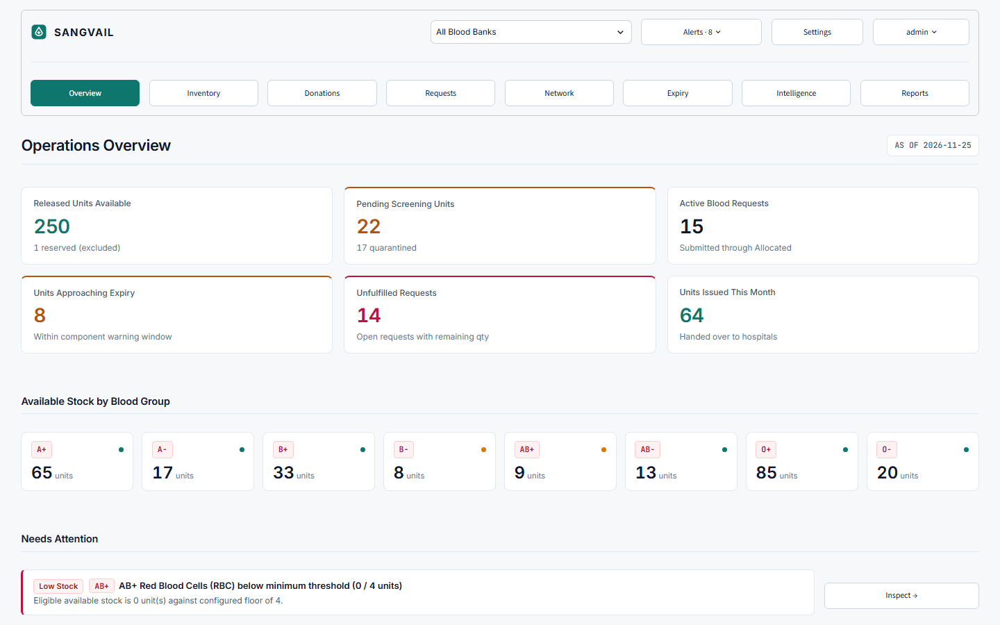

SANGVAIL
BLOOD BANK BI.
A clinical blood inventory management and demand intelligence platform — maintaining unit-level cold-chain custody, First-Expiry-First-Out (FEFO) allocation, component wastage monitors, and Scikit-Learn shortage forecasting.

COLD-CHAIN HEALTHCARE SUPPLY CHAIN INTELLIGENCE.
Blood components have strict shelf lives (platelets 5 days, RBC 35-42 days) and require cold-chain temperature adherence. SANGVAIL prevents stockouts and eliminates expiration wastage through automated FEFO allocation.
Operations Overview
Real-time command center displaying available released units, quarantined testing stock, urgent hospital demands, and approaching expiries.
Unit Custody Ledger
Tracks each individual blood unit from voluntary donation through component separation, viral testing clearance, and hospital issue.
FEFO Allocation Engine
Automates First-Expiry-First-Out allocation algorithms to ensure expiring units are dispatched to emergency hospital requests first.
Predictive Shortage Forecasting
Scikit-Learn time-series models forecasting demand surges by blood group to trigger donor recruitment drives.
Data Quality Centre
14-check data integrity auditor validating cold-chain timestamps, blood type compatibilities, and volume reconciliations.
Hospital Network Dispatch
Monitors regional blood bank inter-depot transfers to balance supply deficits across hospital clusters.
HOW IT WORKS.
Relational healthcare custody database backed by SQLAlchemy, SQLite WAL, and Scikit-Learn.
Donation Intake
Donor screened, whole blood collected, and unit barcode generated.
Testing & Release
Pathology results validated; cleared units moved to released stock.
Hospital Request
Incoming clinical order evaluated for ABO/Rh compatibility.
FEFO Dispatch
Algorithm selects closest-to-expiry matching units automatically.
Demand Forecast
Historical issue trends train predictive machine learning models.
APPLICATION SCREENSHOTS.
Live screens captured from the running application. Click any image to view full size, or follow setup instructions in the GitHub repository.
HEALTHCARE INVENTORY SPECS & CAPABILITIES.
Key modules, rules, safety checks, and automated test results documented in the repository.
| Subsystem | Technical Implementation | Verified Capability |
|---|---|---|
| Custody Tracking | Unit-level relational ledger with UUIDs | 100% auditable blood unit chain-of-custody |
| Allocation Algorithm | Automated FEFO matching engine | Platelet & RBC wastage minimization |
| Forecasting Engine | Scikit-Learn linear & ensemble regressors | Explainable 30-day shortage risk score |
| Verification Suite | Pytest automated test suite | 32 / 32 automated tests passed |
CORE TECHNOLOGIES.
Frameworks, databases, visualization tools, and testing libraries used in SANGVAIL.
FUTURE ENHANCEMENTS.
Upcoming improvements planned for SANGVAIL.
EXPLORE SOURCE & DOCS.
View the complete codebase, sample datasets, quick-launch scripts, and automated test suites on GitHub.